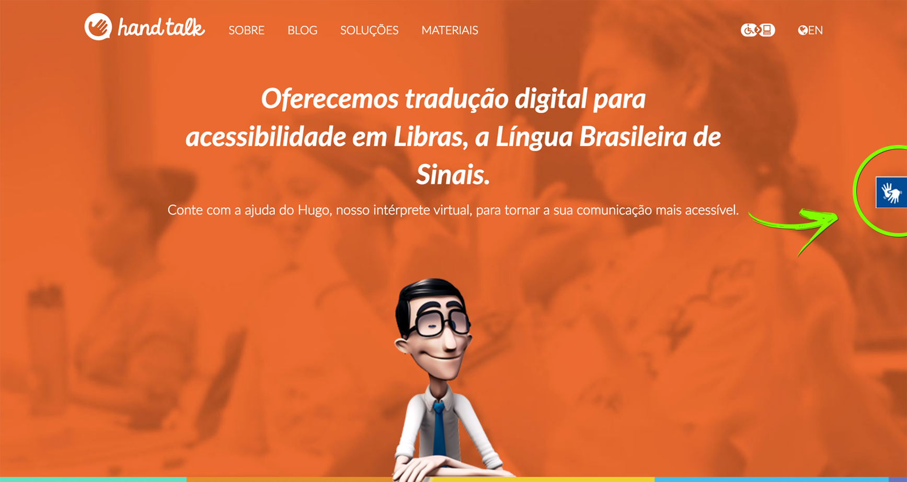
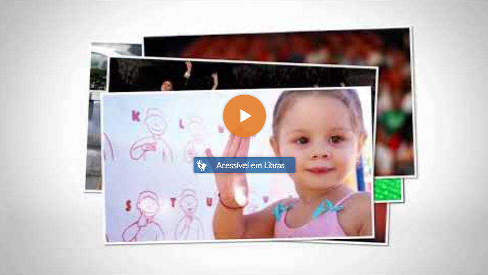
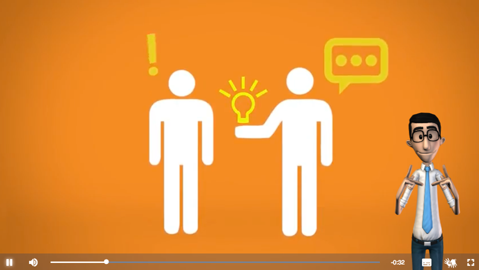
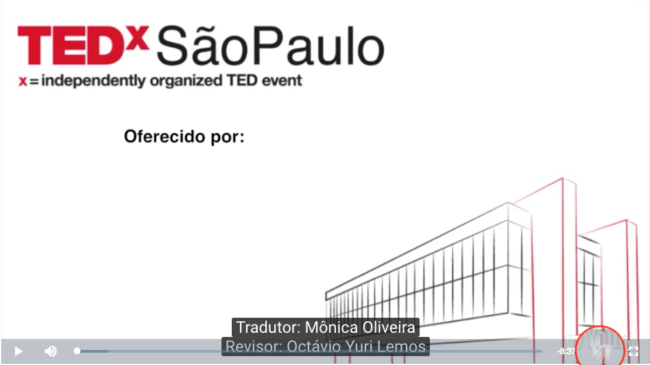

Introdução
O plugin desenvolvido pela Hand Talk torna os sites acessíveis em língua de sinais. O mesmo conta com duas principais funcionalidades: tradução de texto e tradução de vídeos.
Sobre o Tradutor de Texto
O usuário pode ativar a funcionalidade clicando no ícone que representa a acessibilidade em língua de sinais:

Ao clicar, será aberta uma janela com o intérprete 3D da Hand Talk, o Hugo.
Enquanto a janela estiver aberta, os textos e imagens com descrição ficarão clicáveis. Ao clicar, o Hugo captura o texto e sinaliza sua tradução.
Sobre o Tradutor de Vídeos
O plugin oferece um player de vídeo acessível em Libras, que suporta:
Também é possível adicionar acessibilidade automaticamente aos embeds do Youtube e player existentes do Videojs, desde que tenham sempre uma legenda vinculada.
O usuário pode clicar no ícone que representa a acessibilidade em língua de sinais para iniciar o vídeo junto com a tradução do Hugo, ou apenas clicar no botão central para assistir o vídeo sem acessibilidade.

No player acessível você encontra os botões de ativar e desativar tradução para língua de sinais, assistir em tela cheia, tocar e pausar, ajustar volume e a linha do tempo.

Consulte a guia Tradutor de Vídeos > Começando para um guia de implementação.
Sobre o Tradutor Mobile
A tradução de textos e vídeos também está disponivel na versão mobile, com pequenos ajustes que tornam a usabilidade ainda melhor para o usuário surdo. A funcionalidade de tradução em dispositivos móveis vem habilitada por padrão, mas você pode
removê-la definindo o parâmetro mobileEnabled como false caso necessário.
Compatibilidade
O plugin é compatível com a maioria dos navegadores modernos com suporte a WebGL, tais como, Chrome, Firefox, Edge, Safari e Opera.
Abaixo o resultado de testes feitos em sistemas operacionais diferentes usando o plugin em vários navegadores.
| Navegador / S.O. | Windows | MacOs | Ubuntu (Linux) |
|---|---|---|---|
| ✔ | ✔ | ✔ | |
| ✔ | ✔ | ✔ | |
| -- | ✔ | -- | |
| ✔ | ✔ | ✔ | |
| ✔ | -- | -- | |
| 11 | ✔ | -- | -- |
| 10 | ✖ | -- | -- |
| 9 | ✖ | -- | -- |
Legenda:
✔ Compatível
✖ Não compatível
-- Sistema operacional não suporta o navegador
Mensagens de Erro
Algumas mensagens de erro podem surgir por má configuração da ferramenta, são elas:
Sem um token válido, a ferramenta não irá funcionar, emitindo o erro:
O Tradutor de vídeos está disponível no plano
Gold 2 ou superior. Caso a sua assinatura não suporte a funcionalidade de vídeos e a flag videoEnabled estiver habilitada, receberá o erro:
Eventos
Exemplo de Listener de Eventos
ht.on('translated', function () {
console.log('Nova frase traduzida!');
});<body>
<!-- Pega a ultima versão do plugin Hand Talk -->
<script src="https://api.handtalk.me/plugin/latest/handtalk.min.js"></script>
<script>
var ht = new HT({
// Troque por seu token de acesso
token: '<SEU TOKEN>'
});
// Escuta o evento translated
ht.on('translated', function () {
console.log('Nova frase traduzida!');
});
</script>
</body>Em alguns momentos você pode necessitar de dados de uso da ferramenta, como quantidade de aberturas, traduções, saber se a ferramenta carregou, e entre outros. Pra isso, você deve ouvir os eventos disparados por HT, conforme o exemplo
ao lado.
Os eventos disparados por HT são:
| Evento | Descrição | Retorno |
|---|---|---|
| authenticating | Autenticando | undefined |
| errorOnAuth | Erro ao autenticar | undefined |
| authenticated | Autenticado | undefined |
| notCompatible | Navegador ou hardware não compatível | string: 'withoutCanvas' ou 'withoutWebGL' ou 'hardwareDoesNotSupport' |
| customizing | Customizando | undefined |
| customized | Customizado | undefined |
| hugoLoaded | Hugo carregado | undefined |
| activated | Feature de texto ou vídeo ativada | string: 'textManager' ou 'videoManager' |
| translate | Dispara quando um texto é capturado e enviado para tradução pela feature de tradução de texto | string: texto capturado |
| translating | Traduzindo texto no servidor da Hand Talk | undefined |
| errorOnTranslate | Erro ao traduzir texto no servidor da Hand Talk | undefined |
| translated | Texto traduzido corretamente no Servidor da Hand Talk | undefined |
| signalized | Sentença sinalizada por completo | undefined |
| videoManagerReady | Disparado quando o assistente de vídeo esta pronto, utilize para chamar as funções de replace manualmente | undefined |
Tradutor de Sites
Começando
Exemplo de Instalação
var ht = new HT({
// Troque por seu token de acesso
token: "<TOKEN>"
});<body>
<h1>Hand Talk</h1>
<h2>Conte com a ajuda do Hugo, nosso intérprete virtual, para tornar a sua comunicação mais acessível.</h2>
<p>Oferecemos tradução digital para acessibilidade em Libras, a Língua Brasileira de Sinais.</p>
<!-- Pega a ultima versão do plugin Hand Talk -->
<script src="https://api.handtalk.me/plugin/latest/handtalk.min.js"></script>
<script>
var ht = new HT({
// Troque por seu token de acesso
token: "<TOKEN>"
});
</script>
</body>Para a instalação do plugin, deve-se inserir o script da Hand Talk e instanciar a classe HT passando por argumento um dicionário com o token e demais configurações.
No exemplo de instalação à direita, utilizamos a última versão do script hospedado em
https://api.handtalk.me/plugin/latest/handtalk.min.js, após inserir o script da Hand Talk instanciamos a classe HT passando por parâmetro um dicionário com o token.
Sem um token válido, a ferramenta não irá funcionar, emitindo o erro O serviço está desabilitado temporariamente para este website , após clicar no botão de ativação da ferramenta.
Você pode adquirir um token para o seu domínio em
account.handtalk.me.
Ou fale com um de nossos consultores em
handtalk.me/sites.
Parâmetros
Você pode pode preferir habilitar/desabilitar algumas funcionalidades do Tradutor de Sites, para isso utilize os parâmetros abaixo:
| Configurações | Descrição | Valores | Padrão |
|---|---|---|---|
| textEnabled | Quando verdadeiro: exibe o tradutor de sites para textos. | false ou true | true |
| videoEnabled | Quando verdadeiro: monta os players acessíveis em língua de sinais. | false ou true | false |
| side | Define o posicionamento da janela do tradutor no site. O Tradutor de Sites pode ser inicializado do lado esquerdo ou do lado direito da tela. | "right" ou "left" | "right" |
| align | Define o alinhamento horizontal da janela do tradutor no site. | "default" ou "top" ou "bottom" | "default" |
| zIndex | Define o posicionamento da profundidade do tradutor no site, ou seja, determinar se o Tradutor de Sites estará mais próximo ou mais afastado da tela. | Inteiros | 1000000 |
| maxTextSize | Define o tamanho máximo de caracteres para captura de texto em um elemento. | Inteiros | 500 |
| doNotTrack | Se o valor desta propriedade for verdadeiro, as frases traduzidas não serão armazenadas ou utilizada para a melhoria do sistema de tradução. | false ou true | false |
| exceptions | Lista de queries que serão ignoradas pelo plugin, ex.: ['a', 'form', '.main', '#site-title'] |
array | [ ] |
| ytEmbedReplace | Quando verdadeiro substitui os embeds do Youtube por players acessíveis em língua de sinais. | false ou true | false |
| videojsReplace | Quando verdadeiro adiciona os componentes de acessibilidade em uma instancia atual do videojs | false ou true | false |
| mobileEnabled | Quando verdadeiro ativa o tradutor de sites em dispositivos móveis. | false ou true | true |
| mobileConfig | Objeto de configuração para a plataforma mobile, quando definido, sobscreve as configurações padrões de HT. | Object | { } |
Parâmetros para versão mobile
Exemplo de Parâmetros Exclusivos para Versão Mobile
var ht = new HT({
// Troque por seu token de acesso
token: "<TOKEN>",
// Posiciona o Tradutor de Sites ao lado esquerdo da página
align: "left",
// Quando mobile, Posiciona o Tradutor de Sites ao lado direito da página
mobileConfig: {
align: "right"
}
});<body>
<h1>Hand Talk</h1>
<h2>Conte com a ajuda do Hugo, nosso intérprete virtual, para tornar a sua comunicação mais acessível.</h2>
<p>Oferecemos tradução digital para acessibilidade em Libras, a Língua Brasileira de Sinais.</p>
<!-- Pega a ultima versão do plugin Hand Talk -->
<script src="https://api.handtalk.me/plugin/latest/handtalk.min.js"></script>
<script>
var ht = new HT({
// Troque por seu token de acesso
token: "<TOKEN>",
// Posiciona o Tradutor de Sites ao lado esquerdo da página
side: "left",
// Quando mobile, Posiciona o Tradutor de Sites ao lado direito da página
mobileConfig: {
side: "right"
}
});
</script>
</body>Você pode passar parâmetros especificos para dispositivos movéis, para isso basta utilizar a propriedade mobileConfig, e passar os parâmetros que serão sobrescritos. O Parâmetro bottom é exclusivo para dispositivos movéis.
| Configurações | Descrição | Valores | Padrão |
|---|---|---|---|
| bottom | Posicionamento do botão de acessibilidade e do Hugo em relação a parte inferior da tela na versão mobile. Especifique também a unidade de medida (em, %, px). | string | "0px" |
Consulte o exemplo ao lado.
Adicionando Exceções
Adicionando Exceções
var ht = new HT({
// Troque por seu token de acesso
token: "<TOKEN>",
// Ignora todo o conteúdo que possuir o id/class referenciado
exceptions: ["#carousel", ".formulario"]
});<body>
<!-- Não existe nenhuma referência do elemento abaixo na lista de exceções, então ele será traduzido. -->
<h1 id="titulo">Hand Talk</h1>
<!-- a classe formulario está sendo ignorada, logo todo o conteúdo deste form não será traduzido. -->
<form class="formulario">
<input type="text" placeholder="Insira o texto ">
<input type="submit" value="Pesquisar">
</form>
<!-- Este slide será ignorado devido ao id carousel ter sido adicionado a lista de exceções -->
<div id="carousel">
<div>Meu slide 1</div>
<div>Meu slide 2</div>
<div>Meu slide 3</div>
</div>
<!-- Pega a ultima versão do plugin Hand Talk -->
<script src="https://api.handtalk.me/plugin/latest/handtalk.min.js"></script>
<script>
var ht = new HT({
// Troque por seu token de acesso
token: "<TOKEN>",
// Ignora todo o conteúdo que possuir o id/class referenciado
exceptions: ["#carousel", ".formulario"]
});
</script>
</body>Em alguns casos, pode haver algum conflito entre o código da Hand Talk e algum script que o site possui. Para evitar esse conflito, basta adicionar esse elemento como uma exceção.
Tratamento de Exceção de ID e CLASS:
Caso seu site tenha algum problema de conflito com um scripts de carousel, por exemplo, você pode adicionar o elemento na propriedade exceptions.
Declare qual ID ou CLASS não utilizará o Hand Talk, como também nenhum dos seus elementos filhos, ou seja, quando declarar que #carousel não vai utilizar a tradução, nada dentro desta DIV ou elemento irá ser traduzido. Estes elementos
devem ser inseridos entre aspas e separados por vírgula:
exceptions: ["#menu", "#carousel", ".listas", ".formulario"]
No exemplo ao lado, colocamos na exceção um ID de elemento HTML e uma classe CSS, consecutivamente.
Atenção: Ao adicionar o conteúdo como uma exceção, ele não será traduzido pela Hand Talk.
Importante: Dependendo da linguagem e/ou lógica de programação aplicada no desenvolvimento do website, para possibilitar o pleno funcionamento ou aprimorar os resultados obtidos pelo serviço, pode ser necessária a realização de outras customizações no código da Hand Talk, que deverão ser feitas pelo cliente.
Iframes Dinâmicos
Exemplo de Compatibilidade com Iframes Dinâmicos
var ht = new HT({
// Troque por seu token de acesso
token: "<TOKEN>"
});
// Aguarda 3 segundos e insere um iframe na página
window.setTimeout(function() {
// Cria o iframe e adiciona na pagina
var iframe = document.createElement("iframe");
document.body.appendChild(iframe);
//Define o conteúdo do iframe
iframe.contentDocument.write("<div>Olá mundo!</div>");
// Adiciona os listeners no iframe
ht.addListenersToIframe(iframe);
// Ou utilize
// ht.addListenersToIframeAll();
// Para fazer a varredura na página inteira novamente
}, 3000);<body>
<!-- Pega a ultima versão do plugin Hand Talk -->
<script src="https://api.handtalk.me/plugin/latest/handtalk.min.js"></script>
<script>
var ht = new HT({
// Troque por seu token de acesso
token: "<TOKEN>"
)};
// Após 3 segundos cria um iframe
window.setTimeout(function() {
// Cria o iframe e adiciona na pagina
var iframe = document.createElement("iframe");
document.body.appendChild(iframe);
//Define o conteúdo do iframe
iframe.contentDocument.write("<div>Olá mundo!</div>");
// Adiciona os listeners no iframe
ht.addListenersToIframe(iframe);
// Para buscar iframes e adicionar os listeners, utilize:
// ht.addListenersToIframeAll();
}, 3000);
</script>
</body>Ao ser carregado, o plugin Hand Talk faz uma varredura na página buscando iframes e adicionando os listeners necessários para identificar o conteúdo de um elemento. Em casos de iframes que são atualizados dinâmicamente, deve ser utilizada a função
addIframesListenersAll() para buscar novamente por iframes, ou addListenersToIframe(iframe) para um iframe especifico.
Veja o exemplo ao lado.
Tradutor de Vídeos
Começando
Exemplo de Instalação
var ht = new HT({
// Troque por seu token de acesso
token: "<TOKEN>",
// Habilita o Tradutor de Vídeos
videoEnabled: true
});<body>
<!-- Troque os campos <VIDEO_TYPE>, <VIDEO_URL>, <CAPTION_TYPE> e <CAPTION_URL>, pelos dados solicitados-->
<video data-ht="src=<VIDEO_TYPE>:<VIDEO_URL>;subtitle=<CAPTION_TYPE>:<CAPTION_URL>"></video>
<!-- Pega a ultima versão do plugin Hand Talk -->
<script src="https://api.handtalk.me/plugin/latest/handtalk.min.js"></script>
<script>
var ht = new HT({
// Troque por seu token de acesso
token: "<TOKEN>",
// Habilita o Tradutor de Vídeos
videoEnabled: true
});
</script>
</body>Para começar a utilizar o Tradutor de Vídeos, você deve inserir o script da Hand Talk e instanciar a classe HT, passando por parâmetro um dicionário com o token e demais configurações.
No exemplo de instalação à direita, utilizamos a última versão do script hospedado em
https://api.handtalk.me/plugin/latest/handtalk.min.js, após inserir o script da Hand Talk instanciamos a classe HT passando por parâmetro um dicionário com o token e videoEnabled para habilitar o Tradutor
de Vídeos.
Sem a flag videoEnabled ativada, o Tradutor de Vídeos não irá funcionar.
Com o plugin devidamente configurado, siga os passos da sessão abaixo para implementar o Player Acessível.
Utilizando o Player Acessível
O plugin oferece um player de vídeo acessível em Libras, que suporta os seguintes Techs:
- MP4;
- OGG;
- WEBM;
- Youtube;
- Vimeo;
- SambaTech.
Os tipos de legenda suportados são:
- VTT;
- SRT.
Você pode tornar um vídeo acessível definindo o atributo ht-data em um elemento de vídeo, primeiramente defina o tech e caminho do vídeo (obrigatório).
src=<VIDEO_TECH>:<VIDEO_URL>
Construtor do player Hand Talk
<video data-ht="src=<VIDEO_TECH>:<VIDEO_URL>;subtitle=<CAPTIONS_TYPE>:<CAPTIONS_URL>"></video>// Confira o exemplo em htmlEm seguida, separando por ponto e virgula (;), defina o tipo e caminho da legenda. (opcional)
subtitle=<CAPTIONS_TYPE>:<CAPTIONS_URL>
Exemplo com Tech do Youtube
Exemplo: Criando um vídeo com o tech youtube
<!-- Torna o vídeo https://www.youtube.com/watch?v=H2Io3y98FV4 acessivel -->
<video data-ht="src=youtube:H2Io3y98FV4"></video>// Confira o exemplo em htmlCaso o campo subtitle fique em branco em um src do tipo Youtube, a legenda será obtida automaticamente. Como no exemplo ao lado.
Caso o vídeo esteja definido como não listado, ou algum outro tipo de restrição no Youtube", não conseguiremos acessar a legenda, restornando o erro:
O exemplo ao lado (Criando um vídeo com o tech youtube) deve gerar o seguinte player:
Exemplo com Tech do Vimeo
Exemplo: Criando um vídeo com o tech vimeo
<!-- Cria um novo player com uma legenda estatica -->
<video data-ht="src=vimeo:https://player.vimeo.com/video/259226390;subtitle=vtt:assets/HandTalk.vtt"></video>// Confira o exemplo em htmlPara vídeos hospedados no Vimeo, você deve informar a legenda manualmente. Como no exemplo ao lado, o vídeo deve aparecer da seguinte forma:
Exemplo com Tech de MP4/WEBM
Exemplo: Criando um vídeo com o tech mp4
<!-- Cria um novo player com uma legenda estatica -->
<video data-ht="src=mp4:assets/HandTalk.mp4;subtitle=vtt:assets/HandTalk.vtt"></video>// Confira o exemplo em htmlUtilize para vídeos e legendas hospedadas na internet com link direto - Exemplo ao lado.
Exemplo com Tech da SambaTech
Exemplo: Criando um vídeo com o tech sambatech
<!-- Cria um novo player com uma legenda estatica -->
<video data-ht="src=sambatech:https://fast.player.liquidplatform.com/pApiv2/embed/c750c09d7d04891b7f3f5c9a9337d6b9/a40cc34d36f0ee05ae55a971b427888e;subtitle=vtt:assets/HandTalk.vtt"></video>// Confira o exemplo em htmlUtilize para vídeos hospedados na SambaTech e legendas hospedadas na internet com link direto - Exemplo ao lado.
Utilizando Apenas o Tradutor de Vídeos
Exemplo de Utilização
var ht = new HT({
// Troque por seu token de acesso
token: '<SEU TOKEN>',
// Se true, exibe o tradutor de sites para texto
textEnabled: false,
// Habilita o tradutor de sinais nos players
videoEnabled: true
// Use as linhas abaixo para replace automatico de vídeos
// Efetua replace de embeds do youtube automaticamente ao ser inicializado.
//ytEmbedReplace: true,
// Efetua replace de players existentes do videojs automaticamente ao ser inicializado.
//videojsReplace: true
});<body>
<!-- Troque os campos <VIDEO_TYPE>, <VIDEO_URL>, <CAPTION_TYPE> e <CAPTION_URL>, pelos dados solicitados -->
<video data-ht="src=<VIDEO_TYPE>:<VIDEO_URL>;subtitle=<CAPTION_TYPE>:<CAPTION_URL>"></video>
<!-- Pega a ultima versão do plugin Hand Talk -->
<script src="https://api.handtalk.me/plugin/latest/handtalk.min.js"></script>
<script>
var ht = new HT({
// Troque por seu token de acesso
token: '<SEU TOKEN>',
// Se true, exibe o tradutor de sites para texto
textEnabled: false,
// Habilita o tradutor de vídeos
videoEnabled: true
// Use as linhas abaixo para replace automatico de vídeos
// Efetua replace de embeds do youtube automaticamente ao ser inicializado.
//ytEmbedReplace: true,
// Efetua replace de players existentes do videojs automaticamente ao ser inicializado.
//videojsReplace: true
});
</script>
</body>Em alguns casos pode ser necessário adicionar apenas o tradutor de vídeos na página. Geralmente acontece quando a página inteira só possui um vídeo e, está incorporada em outra página em formato de iframe. Pra isso basta desativar o tradutor de textos, assim o botão de acessibilidade em Libras não irá aparecer nas laterais.
Replace Automático de Vídeos
É possível substituir automaticamente os embeds do Youtube e player existentes do Videojs pelo Player Acessível da HandTalk, sempre que uma legenda for encontrada.
Caso o vídeo não possua legenda no idioma pt-BR ou pt, o mesmo ficará com a funcionalidade de Tradução para Libras bloqueada. Conforme a imagem abaixo

Replace Automático de Embeds do Youtube
Exemplo de Utilização de Embeds do Youtube
var ht = new HT({
// Troque por seu token de acesso
token: "<TOKEN>",
// Habilita o tradutor de vídeos
videoEnabled: true,
// Busca por embeds do youtube ao inicializar a ferramenta
ytEmbedReplace: true
});<body>
<!-- Embed padrão do youtube -->
<iframe width="560" height="315" src="https://www.youtube.com/embed/H2Io3y98FV4" frameborder="0" allow="autoplay; encrypted-media" allowfullscreen></iframe>
<!-- Pega a ultima versão do plugin Hand Talk -->
<script src="https://api.handtalk.me/plugin/latest/handtalk.min.js"></script>
<script>
var ht = new HT({
// Troque por seu token de acesso
token: "<TOKEN>",
// Habilita o tradutor de vídeos
videoEnabled: true,
// Busca por embeds do youtube ao inicializar a ferramenta
ytEmbedReplace: true
});
</script>
</body>A ferramenta busca por embeds (iframes) do youtube, e substitui por players accesíveis da Hand Talk.
Você pode habilitar o replace automático passando o valor true a configuração ytEmbedReplace ao instanciar o plugin. Lembrando que você deve também habilitar a feature de vídeo passando true na
configuração videoEnabled.
Se embeds do Youtube forem inseridos após a inicialização do plugin, você deve chamar a função ht.ytEmbedReplaceAll(); para que os novos vídeos tornem-se acessíveis. Também é possível efetuar o replace de um único embed
com ht.ytEmbedReplace(elem):
Replace Automático de Embeds do Videojs
Exemplo de Utilização de Embeds do Videojs
<body>
<!-- Embed padrão do videojs -->
<video id="vid" class="video-js vjs-default-skin" controls width="800" height="450">
<source src="HandTalk.mp4" type='video/mp4'>
<track src="HandTalk.vtt" kind="captions" srclang="pt" label="Português">
</video>
<!-- Pega a ultima versão do plugin Hand Talk -->
<script src="https://api.handtalk.me/plugin/latest/handtalk.min.js"></script>
<script>
videojs('vid');
var ht = new HT({
// Troque por seu token de acesso
token: "<TOKEN>",
// Habilita o tradutor de vídeos
videoEnabled: true,
// Busca por embeds do videojs ao inicializar a ferramenta
videojsReplace: true
});
</script>
</body>var ht = new HT({
// Troque por seu token de acesso
token: "<TOKEN>",
// Habilita o tradutor de vídeos
videoEnabled: true,
// Habilita embeds Videojs
videojsReplace: true
});Parecido com o Youtube Embed Replace, a ferramenta varre a página e adiciona os componentes de acessibilidade em um player existente do videojs, de maneira que você não perca a referência.
Você pode habilitar o replace automático passando com valor true a configuração videojsReplace ao instanciar o plugin. Lembrando que você deve também habilitar a feature de vídeo passando true na
configuração videoEnabled.
Veja o exemplo ao lado.
Se os players do videojs forem inseridos após a inicialização do plugin, você deve chamar a função ht.videojsReplaceAll(); para que os novos vídeos tornem-se acessíveis.
Conforme o exemplo ao lado direito, também é possível efetuar o replace de um único player com ht.videojsReplace(vjsPlayer):
Vídeos Dinâmicos
Exemplo: Embeds dinâmicos do youtube
var ht = new HT({
// Troque por seu token de acesso
token: "<TOKEN>",
// Habilita o tradutor de sinais nos players
videoEnabled: true
});
// Adiciona um vídeo do youtube após 3 segundos
window.setTimeout(function() {
var iframe = document.createElement('iframe');
iframe.src='https://www.youtube.com/embed/a9qsp7l5C3o';
document.body.appendChild(iframe);
// Aguarda o iframe carregar
iframe.onload = function() {
// Torna o embed acessível em Libras
ht.replaceYtEmbed(iframe);
// Ou utilize a linha abaixo para buscar e substituir varios embeds
// ht.replaceYtEmbedAll();
}
}, 3000);<body>
<!-- Pega a ultima versão do plugin Hand Talk -->
<script src="https://api.handtalk.me/plugin/latest/handtalk.min.js"></script>
<script>
var ht = new HT({
// Troque por seu token
token: "<TOKEN>",
// Habilita o tradutor de sinais nos players
videoEnabled: true
});
// Adiciona um vídeo do youtube após 3 segundos
setTimeout(function() {
var iframe = document.createElement('iframe');
iframe.src='https://www.youtube.com/embed/a9qsp7l5C3o';
document.body.appendChild(iframe);
// Aguarda o iframe carregar
iframe.onload = function() {
// Torna o embed acessível em Libras
ht.replaceYtEmbed(iframe);
// Ou utilize a linha abaixo para buscar e substituir varios embeds
// ht.replaceYtEmbedAll();
}
}, 3000);
</script>
</body>Caso o elemento do vídeo seja adicionado ao HTML dinâmicamente depois do carregamento do plugin, você precisa chamar a função de busca para renderizar os players novos.
Para player construidos manualmente, ou seja, utilizando o Player Acessível:
videoManager.search();
Para embeds do youtube:
replaceYtEmbedAll() ou replaceYtEmbed(ytembed).
Para players existentes do videojs:
replaceVideoJsAll() ou replaceVideoJs(vjsplayer).
Para mais detalhes sobre o replace consulte a guia Replace Automático de Vídeos
Legendas
As legendas precisam ser breves e de acordo com o tempo que será utilizado nelas para que o Hugo possa traduzí-las de forma que ele não acelere e não perca a sincronia com o vídeo.
Exemplos
Abaixo está um exemplo de legenda boa e outro de legenda ruim, respectivamente:
00:00:04.868 --> 00:00:10.500 Os grandes feitos da humanidade seriam inúteis se não houvesse a comunicação.
O exemplo acima retrata uma prática boa para legendas.
00:00:01.000 --> 00:00:01.500 Asteroblaudo corria pela rua do alagamento no deserto para poder fugir de um casal de rinocerontes.
Enquanto que o exemplo acima retrata uma prática ruim para legendas.
Resolvendo Conflitos de Estilo (css)
Exemplo de Estrutura Quebrada
<style>
.video {
width: 800px;
height: 600px;
}
.video > iframe {
width: 100%;
height: 100%;
}
</style>
<body>
<div class="video">
<iframe src="https://www.youtube.com/embed/H2Io3y98FV4" frameborder="0"></iframe>
</div>
<!-- Pega a ultima versão do plugin Hand Talk -->
<script src="https://api.handtalk.me/plugin/latest/handtalk.min.js"></script>
<script>
var ht = new HT({
// Troque por seu token
token: "<TOKEN>",
// Habilita o tradutor de sinais nos players
videoEnabled: true,
// Habilita embeds do Youtube
ytEmbedReplace: true
});
</script>
</body>// Confira o exemplo em htmlÉ provável que na substituição do elemento <iframe /> do Youtube, pelo elemento <div /> com a classe CSS video-js do player da Hand Talk, você perca a referência do elemento no seu CSS e Javascript.
No exemplo ao lado o código CSS espera que o filho da classe video seja um iframe:
Ao substituir o elemento <iframe /> por uma <div /> a estrutura do site ficará quebrada. A solução seria esperar como filho um elemento com a classe video-js também.
Solução para a Quebra na Estrutura
<style>
.video {
width: 800px;
height: 600px;
}
.video > iframe,
.video > .video-js {
width: 100%;
height: 100%;
}
</style>
<body>
<div class="video">
<iframe src="https://www.youtube.com/embed/H2Io3y98FV4" frameborder="0"></iframe>
</div>
<!-- Pega a ultima versão do plugin Hand Talk -->
<script src="https://api.handtalk.me/plugin/latest/handtalk.min.js"></script>
<script>
var ht = new HT({
// Troque por seu token
token: "<TOKEN>",
videoEnabled: true,
ytEmbedReplace: true
});
</script>
</body>// Confira o exemplo em html